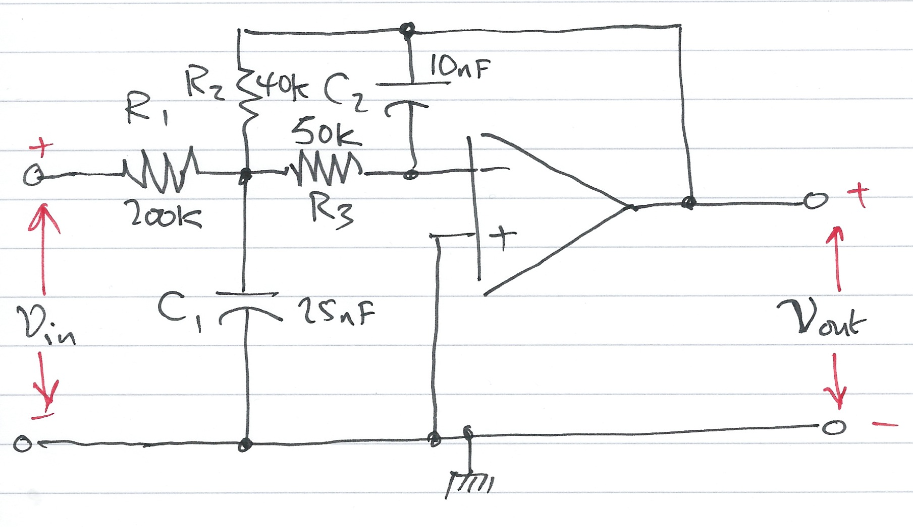

Worksheet 7
Contents
Worksheet 7#
To accompany Chapter 3.4 Transfer Functions#
Colophon#
This worksheet can be downloaded as a PDF file. We will step through this worksheet in class.
An annotatable copy of the notes for this presentation will be distributed before the second class meeting as Worksheet 7 in the Week 3: Classroom Activities section of the Canvas site. I will also distribute a copy to your personal Worksheets section of the OneNote Class Notebook so that you can add your own notes using OneNote.
You are expected to have at least watched the video presentation of Chapter 3.4 of the notes before coming to class. If you haven’t watch it afterwards!
After class, the lecture recording and the annotated version of the worksheets will be made available through Canvas.
Agenda#
Transfer Functions
A Couple of Examples
Circuit Analysis Using MATLAB LTI Transfer Function Block
Circuit Simulation Using Simulink Transfer Function Block
% Matlab setup
clear all
cd ../matlab
pwd
format compact
Transfer Functions for Circuits#
Example 6#
Derive an expression for the transfer function \(G(s)\) for the circuit below. In this circuit \(R_g\) represents the internal resistance of the applied (voltage) source \(v_s\), and \(R_L\) represents the resistance of the load that consists of \(R_L\), \(L\) and \(C\).

Sketch of Solution for Example 6#
Replace \(v_s(t)\), \(R_g\), \(R_L\), \(L\) and \(C\) by their transformed (complex frequency) equivalents: \(V_s(s)\), \(R_g\), \(R_L\), \(sL\) and \(1/(sC)\)
Use the Voltage Divider Rule to determine \(V_\mathrm{out}(s)\) as a function of \(V_s(s)\)
Form \(G(s)\) by writing down the ratio \(V_\mathrm{out}(s)/V_s(s)\)
Worked solution for Example 6#
Pencast: ex6.pdf - open in Adobe Acrobat Reader.
Answer for Example 6#
Example 7#
Compute the transfer function for the op-amp circuit shown below in terms of the circuit constants \(R_1\), \(R_2\), \(R_3\), \(C_1\) and \(C_2\). Then replace the complex variable \(s\) with \(j\omega\), and the circuit constants with their numerical values and plot the magnitude
versus radian frequency \(\omega\) rad/s.
Sketch of Solution for Example 7#
Replace the components and voltages in the circuit diagram with their complex frequency equivalents
Use nodal analysis to determine the voltages at the nodes either side of the 50K resistor \(R_3\)
Note that the voltage at the input to the op-amp is a virtual ground
Solve for \(V_{\mathrm{out}}(s)\) as a function of \(V_{\mathrm{in}}(s)\)
Form the reciprocal \(G(s) = V_{\mathrm{out}}(s)/V_{\mathrm{in}}(s)\)
Use MATLAB to calculate the component values, then replace \(s\) by \(j\omega\).
Plot $\(\left|G(j\omega)\right|\)$ on log-linear “paper”.
Worked solution for Example 7#
Pencast: ex7.pdf - open in Adobe Acrobat Reader.
Answer for Example 7#
The Matlab Bit#
See attached script: solution7.m.
Week 3: Solution 7#
syms s;
R1 = 200*10^3; % 200 kOhm
R2 = 40*10^3; % 40 kOhm
R3 = 50*10^3; % 50 kOhm
C1 = 25*10^(-9); % 25 nF
C2 = 10*10^(-9); % 10 nF
den = R1*((1/R1+ 1/R2 + 1/R3 + s*C1)*(s*R3*C2) + 1/R2);
simplify(den)
Result is: 100*s*((7555786372591433*s)/302231454903657293676544 + 1/20000) + 5
Simplify coefficients of s in denominator
format long
denG = sym2poly(ans)
numG = -1;
Plot
For convenience, define coefficients \(a\) and \(b\):
a = denG(1);
b = denG(2);
w = 1:10:10000;
Gw = -1./(a*w.^2 - j.*b.*w + denG(3));
semilogx(w, abs(Gw))
xlabel('Radian frequency w (rad/s')
ylabel('|Vout/Vin|')
title('Magnitude Vout/Vin vs. Radian Frequency')
grid
Using Transfer Functions in Matlab for System Analysis#
Please use the file tf_matlab.m to explore the Transfer Function features provide by Matlab. Use the publish option to generate a nicely formatted document.
Using Transfer Functions in Simulink for System Simulation#

The Simulink transfer function (Transfer Fcn) block shown above implements a transfer function representing a general
input output function
that it is not specific nor restricted to circuit analysis. It can, however be used in modelling and simulation studies.
Example#
Recast Example 7 as a MATLAB problem using the LTI Transfer Function block.
For simplicity use parameters \(R_1 = R_2 = R_3 = 1\; \Omega\), and \(C_1 = C_2 = 1\) F.
Calculate the step response using the LTI functions.
Verify the result with Simulink.
The Matlab solution: example8.m
MATLAB Solution#
From a previous analysis the transfer function is:
so substituting the component values we get:
We can find the step response by letting \(v_{\mathrm{in}}(t) = u_0(t)\) so that \(V_{\mathrm{in}}(s)=1/s\) then
We can solve this by partial fraction expansion and inverse Laplace transform
as is done in the text book with the help of Matlab’s residue function.
Here, however we’ll use the LTI block that was introduced in the lecture.
Define the circuit as a transfer function
G = tf([-1],[1 3 1])
step response is then:
step(G)
Simples!
Simulink model#
See example_8.slx
open example_8

Result

Let’s go a bit further by finding the frequency response:
bode(G),grid
Matlab Solutions#
For convenience, single script MATLAB solutions to the examples are provided and can be downloaded from the accompanying MATLAB folder.
Solution 7 [solution7.m]
Example 8 [example8.m]
Simulink model [example_8.slx]
cd ../matlab
ls
open solution7